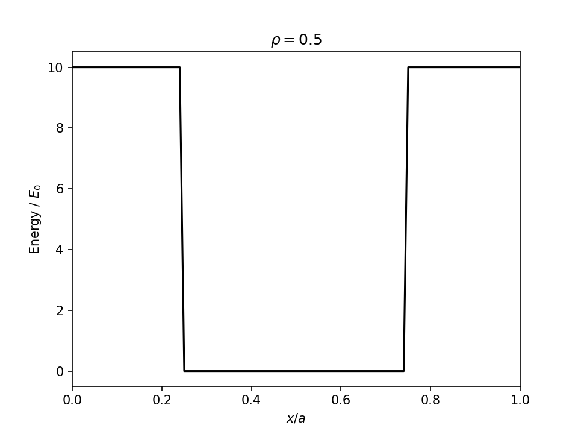
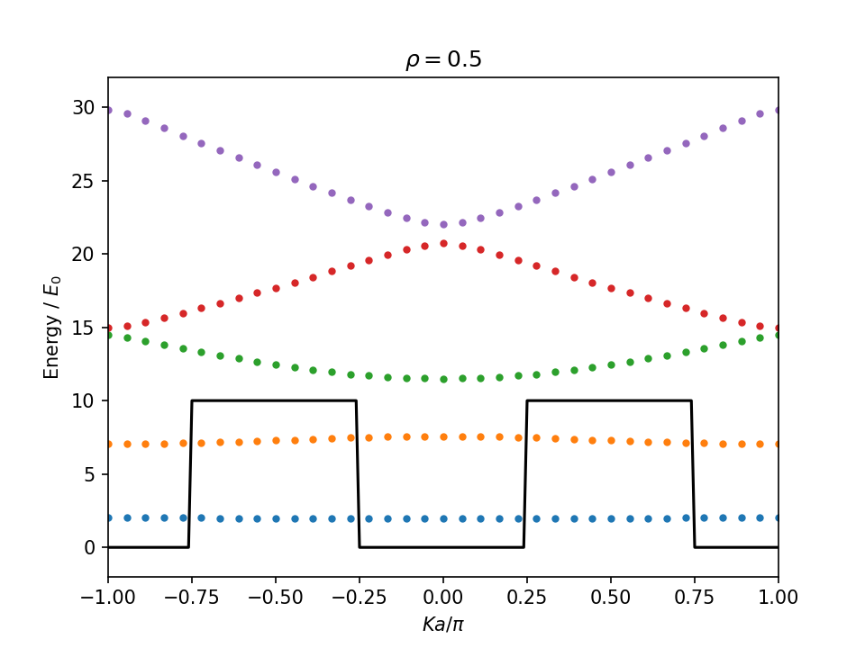

Usage
Here is a sample REPL session to draw a dispersion relationship by using this package.
First, define KronigPennyPotential by calling its constructor.
julia> using ExtendedKronigPennyMatrix
julia> v0=10;
julia> rho=0.5 # b/a;
julia> pot=KronigPennyPotential(v0, rho)
KronigPennyPotential(10, 0.5)Use get_function method to acquire potential function.
julia> using PyPlot
[ Info: Installing matplotlib via the Conda matplotlib package...
[ Info: Running `conda install -q -y matplotlib` in root environment
Collecting package metadata (current_repodata.json): ...working... done
Solving environment: ...working... done
## Package Plan ##
environment location: /home/runner/.julia/conda/3
added / updated specs:
- matplotlib
The following packages will be downloaded:
package | build
---------------------------|-----------------
cycler-0.10.0 | py38_0 14 KB
dbus-1.13.18 | hb2f20db_0 504 KB
expat-2.3.0 | h2531618_2 158 KB
fontconfig-2.13.1 | h6c09931_0 250 KB
freetype-2.10.4 | h5ab3b9f_0 596 KB
glib-2.68.2 | h36276a3_0 3.0 MB
gst-plugins-base-1.14.0 | h8213a91_2 4.9 MB
gstreamer-1.14.0 | h28cd5cc_2 3.2 MB
icu-58.2 | he6710b0_3 10.5 MB
jpeg-9b | h024ee3a_2 214 KB
kiwisolver-1.3.1 | py38h2531618_0 80 KB
lcms2-2.12 | h3be6417_0 312 KB
libpng-1.6.37 | hbc83047_0 278 KB
libtiff-4.1.0 | h2733197_1 449 KB
libuuid-1.0.3 | h1bed415_2 15 KB
libxcb-1.14 | h7b6447c_0 505 KB
libxml2-2.9.10 | hb55368b_3 1.2 MB
lz4-c-1.9.3 | h2531618_0 186 KB
matplotlib-3.3.4 | py38h06a4308_0 26 KB
matplotlib-base-3.3.4 | py38h62a2d02_0 5.1 MB
olefile-0.46 | py_0 33 KB
pcre-8.44 | he6710b0_0 212 KB
pillow-8.2.0 | py38he98fc37_0 628 KB
pyparsing-2.4.7 | pyhd3eb1b0_0 59 KB
pyqt-5.9.2 | py38h05f1152_4 4.5 MB
python-dateutil-2.8.1 | pyhd3eb1b0_0 221 KB
qt-5.9.7 | h5867ecd_1 68.5 MB
sip-4.19.13 | py38he6710b0_0 277 KB
tornado-6.1 | py38h27cfd23_0 588 KB
zstd-1.4.9 | haebb681_0 480 KB
------------------------------------------------------------
Total: 106.8 MB
The following NEW packages will be INSTALLED:
cycler pkgs/main/linux-64::cycler-0.10.0-py38_0
dbus pkgs/main/linux-64::dbus-1.13.18-hb2f20db_0
expat pkgs/main/linux-64::expat-2.3.0-h2531618_2
fontconfig pkgs/main/linux-64::fontconfig-2.13.1-h6c09931_0
freetype pkgs/main/linux-64::freetype-2.10.4-h5ab3b9f_0
glib pkgs/main/linux-64::glib-2.68.2-h36276a3_0
gst-plugins-base pkgs/main/linux-64::gst-plugins-base-1.14.0-h8213a91_2
gstreamer pkgs/main/linux-64::gstreamer-1.14.0-h28cd5cc_2
icu pkgs/main/linux-64::icu-58.2-he6710b0_3
jpeg pkgs/main/linux-64::jpeg-9b-h024ee3a_2
kiwisolver pkgs/main/linux-64::kiwisolver-1.3.1-py38h2531618_0
lcms2 pkgs/main/linux-64::lcms2-2.12-h3be6417_0
libpng pkgs/main/linux-64::libpng-1.6.37-hbc83047_0
libtiff pkgs/main/linux-64::libtiff-4.1.0-h2733197_1
libuuid pkgs/main/linux-64::libuuid-1.0.3-h1bed415_2
libxcb pkgs/main/linux-64::libxcb-1.14-h7b6447c_0
libxml2 pkgs/main/linux-64::libxml2-2.9.10-hb55368b_3
lz4-c pkgs/main/linux-64::lz4-c-1.9.3-h2531618_0
matplotlib pkgs/main/linux-64::matplotlib-3.3.4-py38h06a4308_0
matplotlib-base pkgs/main/linux-64::matplotlib-base-3.3.4-py38h62a2d02_0
olefile pkgs/main/noarch::olefile-0.46-py_0
pcre pkgs/main/linux-64::pcre-8.44-he6710b0_0
pillow pkgs/main/linux-64::pillow-8.2.0-py38he98fc37_0
pyparsing pkgs/main/noarch::pyparsing-2.4.7-pyhd3eb1b0_0
pyqt pkgs/main/linux-64::pyqt-5.9.2-py38h05f1152_4
python-dateutil pkgs/main/noarch::python-dateutil-2.8.1-pyhd3eb1b0_0
qt pkgs/main/linux-64::qt-5.9.7-h5867ecd_1
sip pkgs/main/linux-64::sip-4.19.13-py38he6710b0_0
tornado pkgs/main/linux-64::tornado-6.1-py38h27cfd23_0
zstd pkgs/main/linux-64::zstd-1.4.9-haebb681_0
Preparing transaction: ...working... done
Verifying transaction: ...working... done
Executing transaction: ...working... done
julia> clf()
julia> begin
pf = get_potential(pot)
a = 1
xs=-a:a/100:2a
plot(xs, pf.(xs), "k")
xlim(0,1)
xlabel(L"$x / a$")
ylabel(L"Energy / $E_0$")
title( L"$\rho =$"*string(rho))
end
Define KronigPennyModel by calling its constructor.
julia> nmax=60 # maximum of quantum numbers;
julia> Ka=0 # wavenumber multiplied by a;
julia> model=KronigPennyModel(pot, nmax, Ka)
KronigPennyModel(KronigPennyPotential(10, 0.5), 60, 121, 0.0, Alternates(60), [5.0 3.183098861837907 … -0.0 -0.0; 3.183098861837907 9.0 … -0.05395082816674419 0.05218194855471979; … ; -0.0 -0.05395082816674419 … 14405.0 -0.0; -0.0 0.05218194855471979 … -0.0 14405.0])The field hnm of model contains Hamiltonian matrix.
julia> typeof(model.hnm)
Array{Float64,2}
julia> size(model.hnm)
(121, 121)
julia> model.hnm[1:5,1:5]
5×5 Array{Float64,2}:
5.0 3.1831 3.1831 -0.0 -0.0
3.1831 9.0 -0.0 3.1831 -1.06103
3.1831 -0.0 9.0 -1.06103 3.1831
-0.0 3.1831 -1.06103 21.0 -0.0
-0.0 -1.06103 3.1831 -0.0 21.0Use LinearAlgebra.eigvals method to compute its energy eigenvalues. Refer to the LinearAlgebra standard library section in Julia documentation.
julia> using LinearAlgebra
julia> evs=eigvals(model.hnm);
julia> evs[1:3]
3-element Array{Float64,1}:
1.96806550581
7.582164159222207
11.500508757009115Modify the wavenumber Ka (multiplied by a), and update model by update! method. The matrix, i.e., the field hnm, is also updated.
julia> update!(model, Ka=pi/4);
julia> evs=eigvals(model.hnm);
julia> evs[1:3]
3-element Array{Float64,1}:
1.974713332983734
7.489452030967246
11.757860611313637Draw dispersion curve by scanning Ka values between $[-\pi, \pi]$.
julia> using PyPlot
julia> clf()
julia> begin
a = 1
xs=-a:a/100:2a
plot(xs .- 1/2, pf.(xs), "k") # Holizontally shift to centerize the potential well
cm=get_cmap("tab10")
for Ka in (-18:18)/18*π
update!(model, Ka=Ka)
ev = eigvals(model.hnm)
for i in 1:5
plot(Ka/ π, ev[i], ".", color=cm(i-1))
end
end
xlim(-1,1)
ylim(-2,32)
xlabel(L"$Ka / \pi$")
ylabel(L"Energy / $E_0$")
title( L"$\rho =$"*string(rho))
end